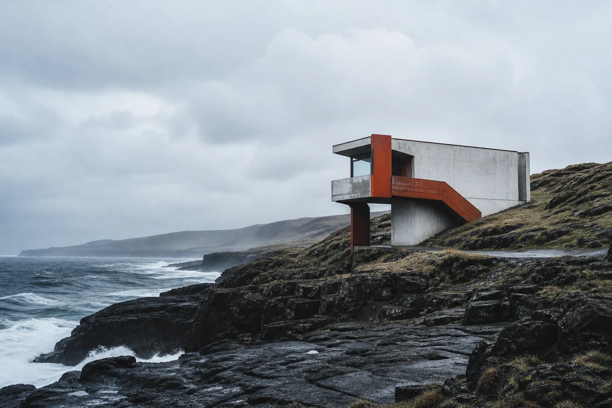
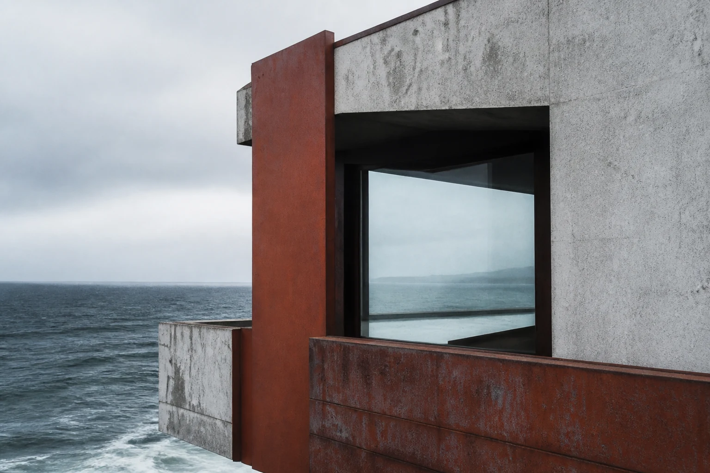

A room for weather.
On a northern edge, a small observatory lets wind, salt and distance become the materials of daily life.
Read the cover story
On a northern edge, a small observatory lets wind, salt and distance become the materials of daily life.
Read the cover storyInside the issue

“The window is not a view. It is the room’s second climate.”
Tide Journal is a fictional UI Done showcase. It demonstrates editorial hierarchy, restrained motion, local typography and responsive image-led storytelling.
Back to gallery